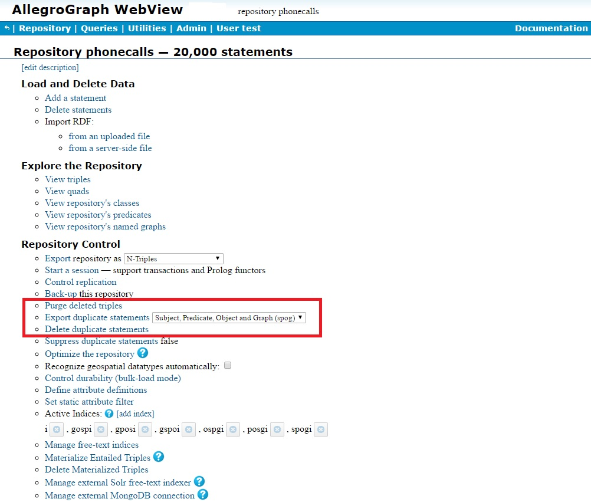
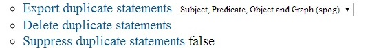
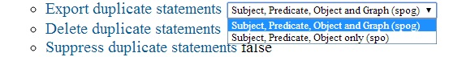
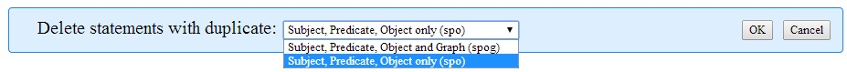
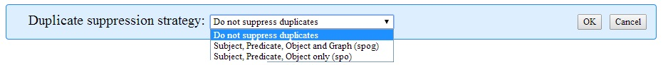

Deleting duplicate triples introduction
Two triples within a store may be SPO-identical or SPOG-identical. Two different triples are SPO-identical if they have identical subject, predicate, and object. They are SPOG-identical if they also have identical graphs. (All triples also have a unique triple id, which is determined by the system and not under user control. Distinct triples always have distinct triple ids even if they are SPO- or SPOG-identical.)
SPO-identical and SPOG-identical triples are also called duplicate triples. (The term duplicate triples refers to both SPO- and SPOG-identical triples and so is ambiguous.)
It is uncommon to deliberately add duplicate triples into a store. It is usually the result of loading data files twice (or loading different files which happen to contain some duplicate data). Uncoordinated hand entry by multiple persons also may result in loading duplicates. There also may be reasons to load duplicates, such as wanting to determine whether separate large data files contain duplicate data. This may be difficult to determine by other means, particularly if the files use different formats.
Unless duplicate suppression is enabled (see below, the AllegroGraph system neither detects nor prevents loading of duplicate triples. It is not an error for a store to contain duplicate triples.
But duplicate triples do use resources unnecessarily, can cause slowdown of query processing, and may cause misleading results, particularly for queries involving counts of triples with specific components.
AllegroGraph provides facilities for identifying and for deleting duplicate triples. These facilities are described in this document. We first describe what can be done to identify and delete duplicates in general, and then we describe each interface (webview, REST, etc.)
Visible triples
A user can be restricted from viewing certain triples (see Security Implementation). The triples that can be viewed by a user are visible to that user. When we talk about duplicates in this document, we always mean duplicates among the triples visible to the current user. It may be the store contains a single triple which is visible to the user and additional SPO-identical triples which are not visible (because the user is restricted from seeing triples with the graphs of the other SPO-identical triples).
Permission to delete duplicates
Even if duplicate triples are visible to a user, the user may not have permission to delete some or all of the duplicates (again, see Security Implementation). Any command to delete duplicates issued by the user will not delete duplicates the user does not have permission to delete.
Duplicates in federated stores
The functionality (described below) for listing and deleting duplicate triples is not supported in federated stores (see AllegroGraph Federation in the Introduction). You can list/delete duplicates in each individual store which makes up the federation, but not in the federated store itself.
Listing duplicate triples
AllegroGraph will generate a list of all SPO-identical or all SPOG-identical duplicates. Thus consider a store that contains (in simplified format):
PREFIX franz: <http://www.franz.com/>
franz:john franz:has-job franz:baker graph1 4234
franz:john franz:has-job franz:baker graph1 4345
franz:john franz:has-job franz:baker graph1 4678
franz:john franz:has-job franz:baker graph2 2314
franz:john franz:has-job franz:baker graph2 2341 For each triple, we have shown the Subject, Predicate, Object, Graph, and a notional triple-id. Note that while the triple id of a triple can be accessed progammatically, users have no control over what id is assigned. We provide these made-up values just so we can talk about the triple ids in our example.
All five triples are SPO-identical. The first three and the last two are also SPOG-identical but none of the first three is SPOG-identical to either of the last two.
The list of SPO-identical triples will be
franz:john franz:has-job franz:baker graph1 4234
franz:john franz:has-job franz:baker graph1 4345
franz:john franz:has-job franz:baker graph1 4678
franz:john franz:has-job franz:baker graph2 2341 The list of SPOG-identical triples will be
franz:john franz:has-job franz:baker graph1 4345
franz:john franz:has-job franz:baker graph1 4678
franz:john franz:has-job franz:baker graph2 2341
If you delete SPOG-identical triples, then two of the first three triples and one of the last two will be deleted, with these triples remaining:
franz:john franz:has-job franz:baker graph1 [4234]
franz:john franz:has-job franz:baker graph2 [2314] If you delete SPO-identical triples, four of the five triples will be deleted, leaving:
franz:john franz:has-job franz:baker graph2 [2314] The triple with the lowest id will remain after duplicate triples are deleted.
Automating duplicate deletion
You can arrange that duplicate triples be deleted at commit time. Then there will never be any new committed duplicates to delete (though any committed duplicates already in the store when you implement this feature will remain until you take action to delete them: enabling duplicate deletion at commit time never affects already committed triples).
Purging deleted triples
When triples are deleted they are not immediately removed from indices because they must remain in all indices until all transactions which may potentially need to see those triples (such as transactions that started before the triples were deleted) have completed (been committed or rolled back). A triple that cannot possibly be accessed by any live transaction is referred to as an inaccessible triple. AllegroGraph provides a facility to purge inaccessible triples from indices. See Purging Deleted Triples for a complete discussion of deleted triple purging.
The AGWebview interface dealing with duplicate triples
AGWebview is a browser-based interface to AllegroGraph. It is the standard way users interact with AllegroGraph. Duplicate triples are handled on the Repository Overview Page:

The three choices that deal with duplicates are Export duplicate statements, Delete duplicate statements, and Suppress duplicate statements:

Getting a file of duplicate triples: Export duplicate statements
The dropdown menu to the right of the Export duplicate statements choice allows you to select whether you are interested in SPOG-identical duplicates or SPO-identical duplicates:

Select which type of duplicates you are interested in, and the click on the Export duplicate statements choice. You will be prompted for a filename and location, and the duplicates will be written to that file in Nquads format. Those triples are the triples which will be deleted if you request duplicate deletion. Note that triples which are not visible to the current user will not be written to the file even if they are duplicates.
Deleting duplicate triples: Delete duplicate statements
If you select this choice, a popup window appears asking whether you want to delete SPO-identical triples or SPOG identical triples:

Select the desired deletion mode and click OK. The duplicates of the selected type will be deleted from the store.
Restoring deleted duplicates
If, before deleting duplicate, you wrote a file of duplicates, you can restore the deleted duplicates by loading the file (see Data Loading).
Commits and duplicates: Suppress duplicate statements
You can have the system automatically delete duplicate triples at commit time. In the Webview interface, you can enable this feature using the Suppress duplicate statements choice on the Repository page. Clicking on that choice displays a popup window with a menu of three choices: do not suppress duplicates at commit time, suppress SPOG-identical at commit time, suppress SPO-identical duplicates at commit time.

REST interface to deleting duplicates
The REST interface is described in the REST/HTTP interface document. The commands relating to duplicate triples start here in that document. In brief, you can get duplicate triples with
GET /repositories/[name]/statements/duplicates The mode argument can be spo or spog (the default).
You can delete them with
DELETE /repositories/[name]/statements/duplicates The mode argument can be spo or spog (the default).
You can get the duplicate suppression strategy with
GET /repositories/[name]/suppressDuplicates and set the duplicate suppression strategy with
PUT /repositories/[name]/suppressDuplicates The type argument can be false (no automatic duplicate deletion at commit time), spo, or spog. Disabling automatic duplicate suppression at commit time can also be done with
DELETE /repositories/[name]/suppressDuplicates JAVA interface to deleting duplicates
The JAVA interface is described in the Javadocs. The relevant class is the AGRepositoryConnection class and the methods are getDuplicateStatements() (for getting duplicates), deleteDuplicates (for deleting).
Python interface to deleting duplicates
The relevant methods, both are in the RepositoryConnection class, are:
def getDuplicateStatements(mode)
def deleteDuplicateStatements(mode) Note you cannot enable supressing duplicates at commit time using the Python interface. See the Python API document.
Lisp interface to deleting duplicates
See Deleting triples. The function get-duplicate-triples returns a cursor of duplicates. The function delete-duplicate-triples delete duplicates. The function duplicate-suppression-strategy controls whether duplicates are deleted at commit time.